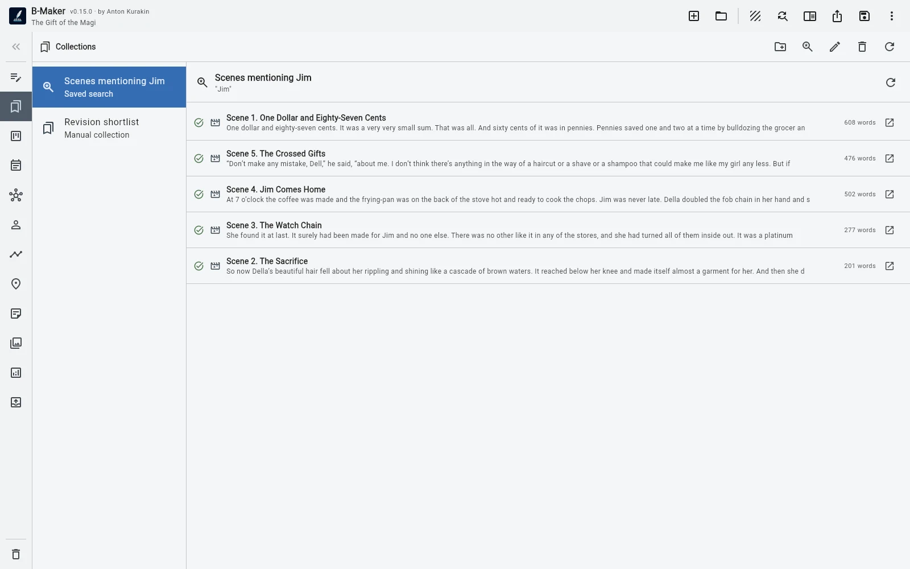

Коротко
Collection собирается вручную. Saved Search вычисляется по условию.
Collection — когда выбор редакторский
«Переписать эти пять глав на неделе», «кандидаты для второй части», «отправить эти сцены бета-ридеру» — осознанные наборы. У них может быть свой порядок, даже если элементы лежат в разных местах книги.
Saved Search — когда важнее правило
«Все сцены со статусом Draft», «все разделы с этой фразой», «все элементы такого типа» должны обновляться сами по мере изменения проекта.
Почему не сделать ещё одну папку?
Папка меняет структурное место. Одна глава одновременно может оставаться в книге, входить в набор «переписать» и в подборку для редактора. Временное внимание не должно менять постоянную структуру.
Скриншот: ручной и динамический наборСлева Collection «Переписать на неделе». Справа Saved Search «Status = Draft». Один и тот же раздел виден в обоих, но остаётся на исходном месте в дереве.
assets/img/bmaker/bmaker-explained-collection-search-01.webpПростой тест
Если фраза звучит как «я выбираю эти элементы» — Collection. Если как «покажи всё, что соответствует условию» — Saved Search.